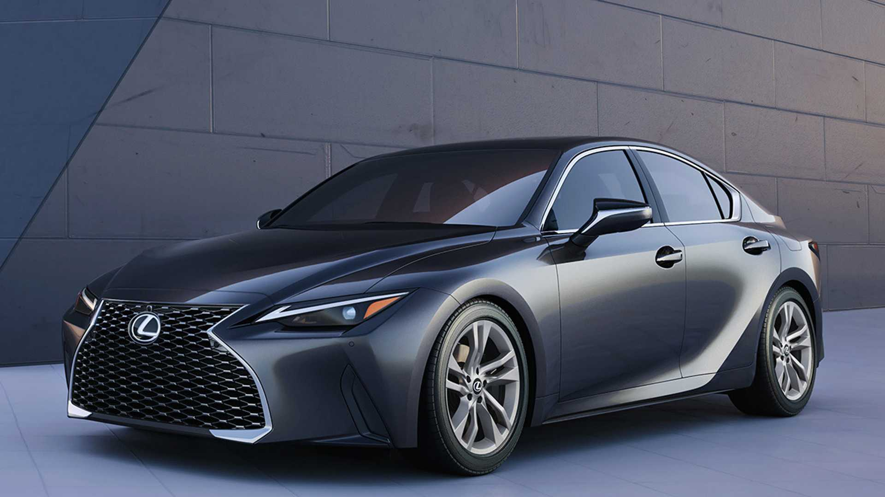

Nosotros somos:
TVZ Garage es un taller especializado en mecanica y estetica, en multiples
marcas,
nosotros nos
destacamos en vehiculos de alta gama tanto como Lexus, Mercedes Benz, BMW, Acura, entre otras
tantas.
Nos
comprometemos en que su vehiculo una vez ingresado en nuestros talleres salga de manera excelente,
que
nuestro
cliente se sienta seguro al volver a manejar, viviendo la experiencia TVZ Garage.
